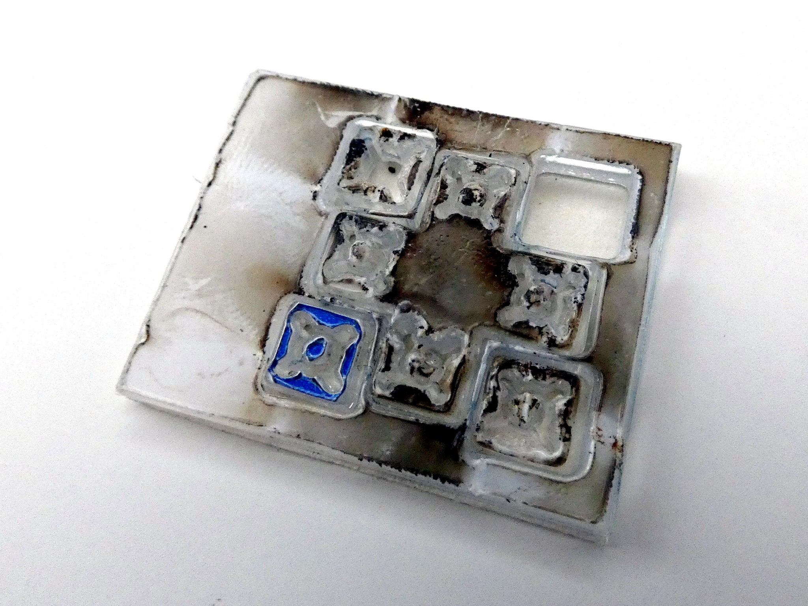
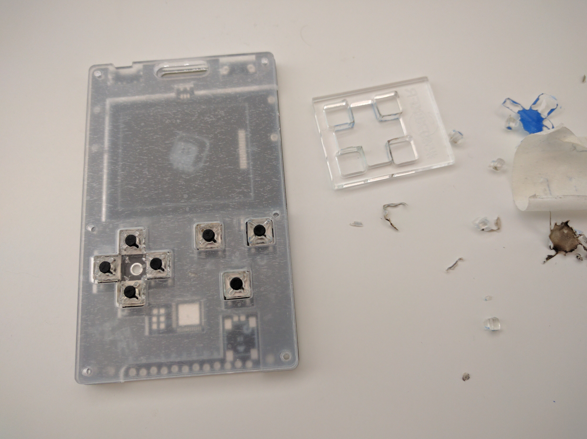

Sculpteo¶
Published on 2019-09-30 in PewPew M4.
Today the new caps arrived from Sculpteo. I have to admit I was a bit unimpressed:
To be fair, they did warn me that I have lines closer than 3mm together, and that there may be singing and other problems, and required me to confirm via e-mail that I’m ready to take the risk. However, how that caused them to lose one of the buttons is a mystery. Good thing I only need three.
Fortunately, that burned and melted thing is just the protective foil on top of the acrylic. After removing it, it looks much better (though I do have bits of the blue foil melted into the part in some places):
Unfortunately, I miscalculated the hole sizes — I made them a little bit smaller than the diameter of the switch, but not enough, and the fit is too loose — they can slide. That makes it also hard to decide if the cutout patter I used gives it enough springiness — which was really the main reason for this experiment.
After some closer examination, I’m afraid there may be one more reason for the caps sliding. Unlike the standard tacts switches, those low- profile switches don’t seem to have the plastic part conical — it’s the same diameter all along the height. Back to the drawing board, I guess.